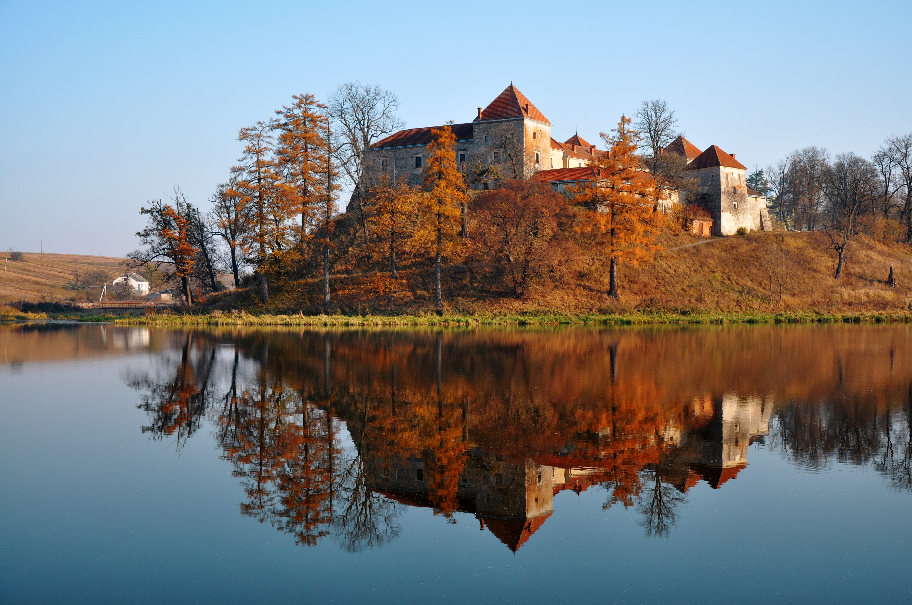

Свірзький замок + старовинні містечка

Загальна відстань: 100–140 км
Час: 5–7 годин
- Свірзький замок
- Прогулянка старим центром Бібрка
- Повернення до Львів
Плюси:
Невеликий кілометраж.
Романтична атмосфера.
Підійде навіть для поїздки після обіду.
🚗 Прокласти маршрут у Google Maps